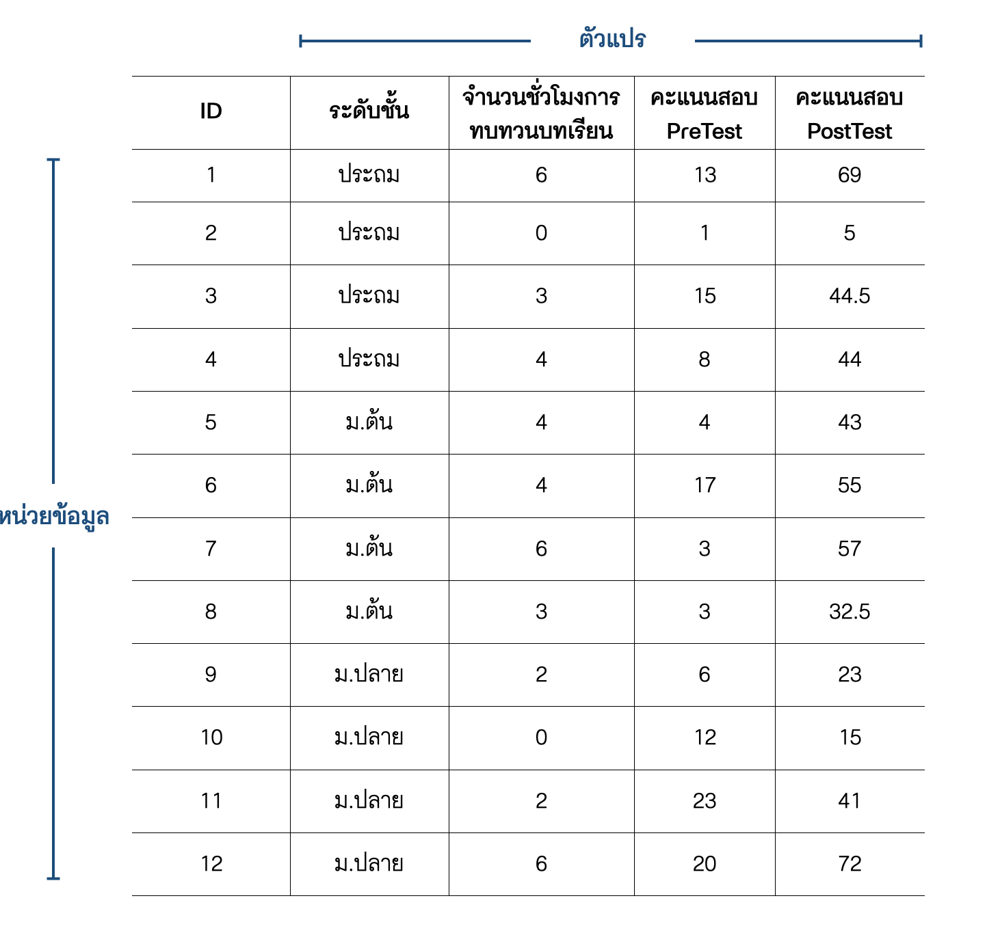

| นักเรียน | คะแนนวิชาคณิตศาสตร์ | คะแนนวิชาวิทยาศาสตร์ |
|---|---|---|
| บุญมา | 10 | 2 |
| บุญมี | NA | 20 |
| บุญเติม | 15 | 20 |
| บุญหนัก | 4 | 5 |
ตอนที่ 4.1 การจัดระเบียบข้อมูล (tidying data)
ชุดข้อมูล (data set) มีลักษณะเป็นตารางที่ประกอบด้วยมิติด้านคอลัมน์ (column) และแถว (row) ใช้เก็บข้อมูลของตัวแปรต่าง ๆ ข้อมูลที่ถูกจัดเก็บอยู่ในตารางดังกล่าวเป็นไปได้ทั้งข้อมูลเชิงปริมาณที่มีค่าเป็นตัวเลข ข้อมูลเชิงคุณลักษณะที่ไม่ใช่ตัวเลข การออกแบบตารางสำหรับจัดเก็บข้อมูลนั้นสามารถทำได้หลากหลายลักษณะ พิจารณาชุดข้อมูลในตาราง 1 และ 2 ด้านล่างจะเห็นว่าถึงแม้จะเป็นเป็นชุดข้อมูลที่จัดเก็บข้อมูลเดียวกัน แต่ก็สามารถที่จะมีรูปแบบการจัดเก็บที่แตกต่างกันได้
ตาราง 1 : คะแนนสอบวิชาคณิตศาสตร์และภาษาอังกฤษของนักเรียน (รูปแบบที่ 1)
ตาราง 2 : คะแนนสอบวิชาคณิตศาสตร์และภาษาอังกฤษของนักเรียน (รูปแบบที่ 2)
| นักเรียน | รายวิชา | คะแนน |
|---|---|---|
| บุญมา | คณิตศาสตร์ | 10 |
| บุญมา | ภาษาอังกฤษ | 2 |
| บุญมี | คณิตศาสตร์ | NA |
| บุญมี | ภาษาอังกฤษ | 20 |
| บุญเติม | คณิตศาสตร์ | 15 |
| บุญเติม | ภาษาอังกฤษ | 20 |
| บุญหนัก | คณิตศาสตร์ | 4 |
| บุญหนัก | ภาษาอังกฤษ | 5 |
อย่างไรก็ตามการจัดเก็บข้อมูลในชุดข้อมูลในรูปแบบที่เหมาะสมกับการดำเนินการวิเคราะห์ข้อมูล หรือการสร้างทัศนภาพข้อมูลจะช่วยให้การวิเคราะห์ข้อมูลตามวัตถุประสงค์ต่าง ๆ สามารถทำได้ง่ายและมีประสิทธิภาพ ในทางกลับกันการจัดเก็บข้อมูลในรูปแบบที่ไม่เหมาะสมจะเป็นอุปสรรคในการวิเคราะห์ข้อมูล นอกจากนี้ยังอาจเป็นปัจจัยที่ก่อให้เกิดความผิดพลาดในผลการวิเคราะห์อีกด้วย รูปแบบของชุดข้อมูลที่เหมาะสมและสนับสนุนให้การวิเคราะห์ข้อมูลสามารถดำเนินไปได้อย่างมีประสิทธิภาพเรียกว่า ชุดข้อมูลจัดระเบียบ (tidy data)
ชุดข้อมูลจัดระเบียบเป็นตารางข้อมูลที่มีลักษณะสำคัญของรูปแบบการจัดเก็บข้อมูล 3 ประการ (สิวะโชติ ศรีสุทธิยากร, 2564; Wickham, 2014) ดังนี้
- มิติด้านคอลัมน์ (column) ของชุดข้อมูล เป็นมิติของตัวแปร โดยที่แต่ละคอลมน์จะใช้เก็บข้อมูลตัวแปรได้เพียงคอลัมน์ละหนึ่งตัวแปรเท่านั้น
- มิติด้านแถว (row) ของชุดข้อมูล เป็นมิติของหน่วยข้อมูล โดยที่แต่ละแถวจะใช้เก็บข้อมูลของหน่วยข้อมูลได้เพียงแถวละหนึ่งหน่วยข้อมูลเท่านั้น
- ภายในแต่ละเซลล์ (cell) ของชุดข้อมูล จะใช้เก็บข้อมูลค่าสังเกตได้เพียงค่าเดียวเท่านั้น
รูป 4.1 แสดงตัวอย่างของชุดข้อมูลจัดระเบียบที่มีคุณลักษณะข้างต้น สังเกตว่าหัวตาราง (แถวแรกของตาราง) จะเป็นส่วนที่ใช้ระบุชื่อของตัวแปรในแต่ละคอลัมน์ อย่างไรก็ตามในสถานการณ์จริงชุดข้อมูลส่วนใหญ่มักมีลักษณะที่ละเมิดเงื่อนไขของชุดข้อมูลจัดระเบียบข้างต้นอย่างน้อยหนึ่งข้อ การจัดระเบียบชุดข้อมูลจึงเป็นขั้นตอนที่มีความสำคัญภายใต้การดำเนินงานทางด้านวิทยาการข้อมูล เนื้อหาในตอนที่ 4.1 นี้จึงจะกล่าวถึง การสำรวจลักษณะของชุดข้อมูล เพื่อวิเคราะห์สภาพและระบุปัญหาความไม่เป็นระเบียบของชุดข้อมูล (ถ้ามี) จากนั้นจะกล่าวถึงวิธีการที่เกี่ยวข้องสำหรับแก้ปัญหาดังกล่าว รายละเอียดมีดังนี้

เรื่องที่ 4.1.1 การสำรวจลักษณะของชุดข้อมูล
ในหัวข้อนี้จะใช้ชุดข้อมูล gapminder (Bryan, 2017) ที่ประกอบด้วยข้อมูลเกี่ยวกับจำนวนประชากร (pop) ผลิตภัณฑ์มวลรวมในประเทศต่อหัว (gdpPercap) และอายุขัยเฉลี่ยของประชากร (lifeExp) ของประเทศต่าง ๆ เป็นตัวอย่างประกอบการอธิบาย เมื่อผู้วิเคราะห์นำข้อมูล gapminder เข้าสู่โปรแกรมแล้วเรียกดูชุดข้อมูลจะได้ผลลัพธ์ที่มีลักษณะดังนี้
country continent year lifeExp pop gdpPercap
1 Afghanistan Asia 1952 28.801 8425333 779.4453
2 Afghanistan Asia 1957 30.332 9240934 820.8530
3 Afghanistan Asia 1962 31.997 10267083 853.1007
4 Afghanistan Asia 1967 34.020 11537966 836.1971
5 Afghanistan Asia 1972 36.088 13079460 739.9811
6 Afghanistan Asia 1977 38.438 14880372 786.1134
7 Afghanistan Asia 1982 39.854 12881816 978.0114
8 Afghanistan Asia 1987 40.822 13867957 852.3959
9 Afghanistan Asia 1992 41.674 16317921 649.3414
10 Afghanistan Asia 1997 41.763 22227415 635.3414 country continent year lifeExp pop gdpPercap
1695 Zimbabwe Africa 1962 52.358 4277736 527.2722
1696 Zimbabwe Africa 1967 53.995 4995432 569.7951
1697 Zimbabwe Africa 1972 55.635 5861135 799.3622
1698 Zimbabwe Africa 1977 57.674 6642107 685.5877
1699 Zimbabwe Africa 1982 60.363 7636524 788.8550
1700 Zimbabwe Africa 1987 62.351 9216418 706.1573
1701 Zimbabwe Africa 1992 60.377 10704340 693.4208
1702 Zimbabwe Africa 1997 46.809 11404948 792.4500
1703 Zimbabwe Africa 2002 39.989 11926563 672.0386
1704 Zimbabwe Africa 2007 43.487 12311143 469.7093ผลลัพธ์ข้างต้นจะเห็นว่าชุดข้อมูล gapminder ประกอบด้วยตัวแปรทั้งหมด 6 ตัว ได้แก่ ประเทศ (country) ทวีป (continent) ปี (year) อายุขัยเฉลี่ยของประชากร (lifeExp) จำนวนประชากร (pop) และผลิตภัณฑ์มวลรวมต่อหัวภายในประเทศ (gdpPercap) ผู้อ่านจะสังเกตเห็นว่าการเรียนดูข้อมูลทั้งชุดขึ้นมาโดยตรงดังตัวอย่างข้างต้นเป็นวิธีการที่ไม่มีประสิทธิภาพในการสำรวจข้อมูล ทั้งนี้เป็นเพราะในสถานการณ์ที่ข้อมูลมีจำนวนมาก วิธีการดังกล่าวจะให้รายละเอียดของชุดข้อมูลที่มากเกินไปโดยไม่จำเป็น นอกจากนี้ยังมีโอกาสสูงที่จะเกิดปัญหาข้อมูลล้นหน้าจอแสดงผล จนผู้วิเคราะห์ไม่สามารถทราบสภาพของชุดข้อมูลดังกล่าวได้อย่างสะดวก
ในทางปฏิบัติการสำรวจชุดข้อมูลต่าง ๆ ผู้วิเคราะห์จะไม่ได้เรียกดูหรือสำรวจชุดข้อมูลทั้งหมดโดยตรง แต่จะใช้ module ของโปรแกรมวิเคราะห์ข้อมูลช่วยในการสำรวจ module ดังกล่าวจะทำหน้าที่สรุปสารสนเทศที่จำเป็นสำหรับการทำความเข้าใจสภาพของชุดข้อมูลดังกล่าว ได้แก่ การเรียกดูรายการและสถานะของตัวแปรในชุดข้อมูล และการเรียกดูส่วนหัวและส่วนท้ายของชุดข้อมูล รายละเอียดมีดังนี้
การเรียกดูรายการและสถานะของตัวแปร
วิธีการเรียกดูผลลัพธ์ส่วนนี้จะแตกต่างกันไปขึ้นอยู่กับผู้วิเคราะห์ว่าใช้โปรแกรมใด เช่น ในกรณีที่ใช้ภาษา R อาจเลือกใช้ฟังก์ชัน str() หรือ glimpse() หรือในกรณีที่ใช้ภาษา Python อาจเลือก method info() ภายใต้ pandas library เป็นต้น ผลการวิเคราะห์ด้านล่างแสดงผลลัพธ์ในภาษา R และ Python ดังกล่าว
# R syntax
library(dplyr)
glimpse(gapminder)Rows: 1,704
Columns: 6
$ country <fct> "Afghanistan", "Afghanistan", "Afghanistan", "Afghanistan", …
$ continent <fct> Asia, Asia, Asia, Asia, Asia, Asia, Asia, Asia, Asia, Asia, …
$ year <int> 1952, 1957, 1962, 1967, 1972, 1977, 1982, 1987, 1992, 1997, …
$ lifeExp <dbl> 28.801, 30.332, 31.997, 34.020, 36.088, 38.438, 39.854, 40.8…
$ pop <int> 8425333, 9240934, 10267083, 11537966, 13079460, 14880372, 12…
$ gdpPercap <dbl> 779.4453, 820.8530, 853.1007, 836.1971, 739.9811, 786.1134, …# Python syntax
import pandas
gapminder.info()<class 'pandas.core.frame.DataFrame'>
RangeIndex: 1704 entries, 0 to 1703
Data columns (total 6 columns):
# Column Non-Null Count Dtype
--- ------ -------------- -----
0 country 1704 non-null category
1 continent 1704 non-null category
2 year 1704 non-null int32
3 lifeExp 1704 non-null float64
4 pop 1704 non-null int32
5 gdpPercap 1704 non-null float64
dtypes: category(2), float64(2), int32(2)
memory usage: 51.4 KBเมื่อพิจารณาผลลัพธ์จากภาษา R ข้างต้นแสดงให้เห็นว่าในชุดข้อมูล gapminder ประกอบด้วยข้อมูลจำนวน 1,704 หน่วย และมีจำนวน 6 คอลัมน์ โดยมีการรายงานชื่อของตัวแปรในแต่ละคอลัมน์ พร้อมทั้งระบุสถานะของตัวแปรดังกล่าว เช่น ตัวแปร country มีสถานะเป็นตัวแปรประเภทปัจจัย (fct) หรือตัวแปร year มีสถานะเป็นตัวแปรตัวเลขจำนวนเต็ม (int) หรือตัวแปร gdrPercap มีสถานะเป็นตัวแปรประเภทจำนวนจริง (dbl) เป็นต้น ผลลัพธ์นี้ช่วยให้ผู้วิเคราะห์ทราบว่าการนำเข้าข้อมูลดังกล่าว นำเข้ามาอย่างถูกต้องหรือไม่ หากมีตัวแปรใดที่ถูกจัดเก็บอยู่ในสถานะที่ไม่เหมาะสม ผู้วิเคราะห์ก็สามารถดำเนินการแก้ไขปรับเปลี่ยนให้เหมาะสมได้ และเมื่อพิจารณาผลลัพธ์จากภาษา Python พบว่าให้สารสนเทศในลักษณะเดียวกับภาษา R
การเรียกดูส่วนหัวและส่วนท้ายของชุดข้อมูล
วิธีการนี้เป็นวิธีการง่าย ๆ ที่ช่วยให้ผู้วิเคราะห์ทำความเข้าใจโครงสร้างของตารางข้อมูล ขอบเขตของตัวแปร รวมทั้งลักษณะของค่าสังเกตบางส่วนที่จัดเก็บอยู่ในชุดข้อมูล การดำเนินการส่วนนี้ด้วยภาษา R สามารถทำได้โดยใช้ฟังก์ชัน head() และ tail() ตามลำดับ ส่วนภาษา Python สามารถทำได้โดยใช้ method head() และ tail() ของ pandas libary ดังตัวอย่างต่อไปนี้
# R syntax
head(gapminder)# A tibble: 6 × 6
country continent year lifeExp pop gdpPercap
<fct> <fct> <int> <dbl> <int> <dbl>
1 Afghanistan Asia 1952 28.8 8425333 779.
2 Afghanistan Asia 1957 30.3 9240934 821.
3 Afghanistan Asia 1962 32.0 10267083 853.
4 Afghanistan Asia 1967 34.0 11537966 836.
5 Afghanistan Asia 1972 36.1 13079460 740.
6 Afghanistan Asia 1977 38.4 14880372 786.# R syntax
tail(gapminder)# A tibble: 6 × 6
country continent year lifeExp pop gdpPercap
<fct> <fct> <int> <dbl> <int> <dbl>
1 Zimbabwe Africa 1982 60.4 7636524 789.
2 Zimbabwe Africa 1987 62.4 9216418 706.
3 Zimbabwe Africa 1992 60.4 10704340 693.
4 Zimbabwe Africa 1997 46.8 11404948 792.
5 Zimbabwe Africa 2002 40.0 11926563 672.
6 Zimbabwe Africa 2007 43.5 12311143 470.# Python syntax
gapminder.head() country continent year lifeExp pop gdpPercap
0 Afghanistan Asia 1952 28.801 8425333 779.445314
1 Afghanistan Asia 1957 30.332 9240934 820.853030
2 Afghanistan Asia 1962 31.997 10267083 853.100710
3 Afghanistan Asia 1967 34.020 11537966 836.197138
4 Afghanistan Asia 1972 36.088 13079460 739.981106# Python syntax
gapminder.tail() country continent year lifeExp pop gdpPercap
1699 Zimbabwe Africa 1987 62.351 9216418 706.157306
1700 Zimbabwe Africa 1992 60.377 10704340 693.420786
1701 Zimbabwe Africa 1997 46.809 11404948 792.449960
1702 Zimbabwe Africa 2002 39.989 11926563 672.038623
1703 Zimbabwe Africa 2007 43.487 12311143 469.709298ในทางปฏิบัติผลการวิเคราะห์ด้วยวิธีการข้างต้นเพียงพอสำหรับผู้วิเคราะห์ที่จะใช้พิจารณาว่าโครงสร้างการจัดเก็บข้อมูลในชุดข้อมูลที่นำเข้ามามีลักษณะเป็นชุดข้อมูลจัดระเบียบที่เหมาะสำหรับการนำไปวิเคราะห์ข้อมูลตามวัตถุประสงค์แล้วหรือไม่ หากยังไม่เหมาะสมผู้วิเคราะห์จำเป็นต้องแก้ปัญหาในเชิงของโครงสร้างชุดข้อมูลดังกล่าวก่อนที่จะดำเนินการในขั้นตอนต่อไป หัวข้อถัดไปจะกล่าวถึงเครื่องมือหรือวิธีการพื้นฐานที่จำเป็นสำหรับปรับเปลี่ยนลักษณะของชุดข้อมูลให้ตรงกับความต้องการ
เรื่องที่ 4.1.2 การปรับเปลี่ยนลักษณะของชุดข้อมูล (reshaping data)
ชุดข้อมูลที่ยังไม่เป็นระเบียบมีหลากหลายลักษณะ และโดยมากมักพบเมื่อผู้วิเคราะห์ได้ข้อมูลมาจากแหล่งข้อมูลทุติยภูมิ เช่น ฐานข้อมูล หรือแหล่ง open data ต่าง ๆ หัวข้อนี้จะกล่าวถึงปัญหาข้อมูลไม่เป็นระเบียบที่มักพบและวิธีการแก้ปัญหาดังกล่าว รายละเอียดมีดังนี้
การปรับเปลี่ยนรูปแบบชุดข้อมูลระหว่างชุดข้อมูลแบบกว้างกับชุดข้อมูลแบบยาว
ชุดข้อมูลอาจจำแนกได้เป็น 2 ลักษณะ ได้แก่ ชุดข้อมูลแบบกว้าง (wide format) และชุดข้อมูลแบบยาว (long format) ชุดข้อมูลแบบกว้าง เป็นชุดข้อมูลที่มีการกระจายค่าสังเกตของตัวแปรสำคัญขึ้นไปอยู่บนคอลัมน์ ดังตัวอย่างในตาราง 3 โดยส่วนใหญ่ตารางลักษณะนี้เหมาะสำหรับการนำเสนอข้อมูล หรือนำไปใช้สำหรับสร้างทัศนภาพข้อมูลในบางกรณี แต่มักไม่เหมาะที่จะนำไปเข้าสู่โมเดลวิเคราะห์ข้อมูลต่าง ๆ
ตาราง 3 : จำนวนนักเรียนจำแนกตามรายวิชาและช่วงคะแนนผลการสอบ O-NET ระดับชั้น ม.6 ปีการศึกษา 2560
ช่วงคะแนนผลสอบ O-NET |
||||||||||
|---|---|---|---|---|---|---|---|---|---|---|
| วิชา | < 10 คะแนน | 10-20 | 20-30 | 30-40 | 40-50 | 50-60 | 60-70 | 70-80 | 80-90 | 90-100 |
| ภาษาไทย | 205 | 10918 | 39277 | 59459 | 80767 | 84977 | 61052 | 28544 | 6623 | 221 |
| สังคมศึกษา | 93 | 11450 | 119492 | 155338 | 64380 | 17638 | 3721 | 447 | 8 | 0 |
| ภาษาอังกฤษ | 2664 | 120768 | 146339 | 48926 | 21706 | 12859 | 8510 | 5868 | 3791 | 1156 |
| คณิตศาสตร์ | 52250 | 163221 | 81737 | 29113 | 14854 | 9772 | 7302 | 5524 | 4516 | 4564 |
| วิทยาศาสตร์ | 950 | 61511 | 183241 | 75152 | 25353 | 12909 | 7437 | 3944 | 1578 | 157 |
ชุดข้อมูลแบบยาว เป็นชุดข้อมูล